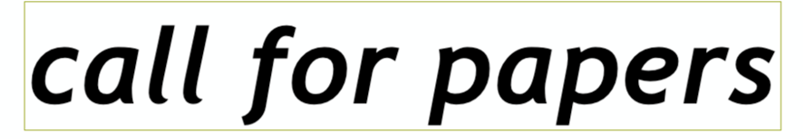

¿Cómo se configura la escucha en la realidad social latinoamericana?
¿Cómo se configura el cuerpo, el humano, el cyborg, desde Latinoamérica o la identidad latinoamericana, pre-cultural, pre-colonial, colonial, decolonial y pre-americana?
Reflexión, opinión, crítica social, política, filosofía, o contraposturas a todo lo anterior alrededor de la escucha, el cuerpo, el humano, el cyborg, desde Latinoamérica o la identidad latinoamericana, pre-cultural, pre-colonial, colonial, decolonial y pre-americana.
Son significativas las siguientes líneas de investigación:
- . Pensamiento pre-colonial y de-colonial en torno a la música, el arte sonoro, la escucha y otras auralidades latinoamericanas.
- . Reflexiones, planteamientos, trasegares filosóficos, crítica social, política y apolítica en el contexto latinoamericano en torno a la escucha, la cultura, el cuerpo, el cyborg, las tecnologías, la información, las artes y el individuo latinoamericano en sí.
- . Antropología de las músicas y usos del sonido en Latinoamérica o el contexto latinoamericano.
- . Prácticas y performatividades en Latinoamérica o el contexto latinoamericano.
- . Migración, exilio y narrativas internacionales en torno a Latinoamérica o el contexto latinoamericano.
- . Planteamientos, temáticas y tópicos necesarios para Latinoamérica o que configuren fronteras en el contexto latinoamericano.
Enviar a: ideofonica@gmail.com